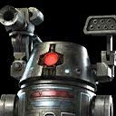

BT-1
A blastomech prototype droid who is known for destroying the Tarkin Initiative base in which he was created.
A blastomech prototype droid who is known for destroying the Tarkin Initiative base in which he was created.
Deal Physical damage to target enemy three times and inflict a stack of Damage Over Time for 2 turns.
Deal Physical damage to all enemies and inflict a stack of Damage Over Time for 2 turns and Expose for 1 turn. If the target enemy is inflicted with Target Lock, inflict Burning and another stack of Damage Over Time for 2 turns.
At the start of battle, BT-1 gains 10% Critical Damage for each Droid ally, 10% Potency for each Dark
Side ally, and 5 Speed for each Scoundrel ally. If 0-0-0 is an active ally, gain the granted ability Kill Them All. Whenever 0-0-0 uses a Special ability, BT-1 assists dealing 40%
less damage.
Omicron Boost : While in 3v3 Grand Arenas: Whenever BT-1 or 0-0-0 defeat an
enemy, their cooldowns are refreshed and they gain 30% Turn Meter.
Deal Physical damage to all enemies and call 0-0-0 to assist.
At the start of battle, BT-1 gains 100% Offense. Whenever BT-1 defeats an enemy, he gains the granted ability Haywire and takes a bonus turn. During this bonus turn, BT-1 removes Ability Block from himself and may only use Haywire.
Deal Physical damage to all other characters, reduced by 75% for allies, which can't be evaded. This damage can't defeat allies or enemies.